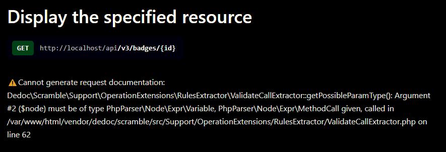
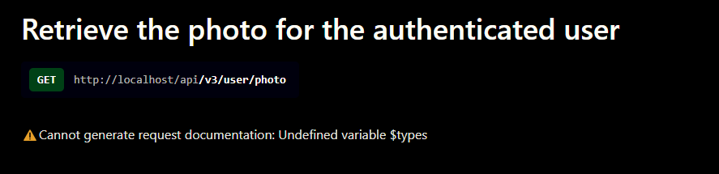

Rapport IFT3150 - H25
Vi Phung
À propos
C'est un projet de développement d'une application mobile par l'organisme MONA, visant à découvrir, photographier et collectionner de l'art public.
J'ai rejoint l'équipe de développement du serveur MONA dans le cadre du cours projet IFT3150 en Hiver 2025.
Rapport hebdomadaire
Ma première rencontre avec l'équipe MONA a commencé avec Lena et Christian – un autre étudiant participant au projet IFT3150. Lena nous a raconté l'histoire et le développement du projet, et j'ai été très impressionné par leur capacité à rassembler une équipe de bénévoles et obtenir des subventions pour financer l'application mobile.
L'équipe est très bien organisée, dirigée par Lena Krause, et collabore entre le département d'histoire de l'art et celui de l'information et de recherche opérationnelle.
Ma tâche initiale était de créer des liens pour les rapports et de me familiariser avec l'application mobile MONA.
Cette semaine, j'ai eu la première rencontre en présentiel avec certains membres de l'équipe MONA, notamment Lena, Christian, Tiffany et Sarah. Lena nous a présenté en détail l'interface admin de MONA ainsi que l'espace Figma contenant les maquettes de l'application mobile. J'ai fourni des suggestions sur l'expérience utilisateur.
On a décidé que je travaillerais sur le côté serveur du projet. Initialement, je devais apprendre à configurer et installer le serveur avec Simon, mais il a dû s'absenter pour des raisons de santé. J'ai donc étudié la documentation des étudiants précédents, notamment Corélie, pour me familiariser avec la configuration du serveur.
Cette semaine, j'ai eu une réunion avec Lena, Christian, Tiffany et Simon. C'était la première rencontre physique avec Simon, après une réunion en ligne antérieure. Simon m'a brièvement expliqué la structure du serveur MONA et m'a aidé pour l'installation, la configuration du serveur ainsi que la migration des bases de données.
J'ai poursuivi ma collaboration avec Simon pour créer une pull
request dans le répertoire mona-server intitulée
"Generation documentation for the application's APIs and code linting".
La tâche se décompose en différentes étapes :
-
Génération de la documentation OpenAPI :
- L'objectif était de générer la documentation OpenAPI pour les routes API existantes.
- J'ai rencontré des problèmes lors de l'installation de
dedoc/scrambleà cause de conflits de dépendances. J'ai résolu le problème en utilisant la commande avec Sail et en ajoutant le drapeau-Wpour autoriser toute installation, quelle que soit la version, pour permettre la mise à jour des dépendances :
Après une installation réussie, la documentation générée est accessible via la route./vendor/laravel/sail/bin/sail composer require dedoc/scramble:* -W/docs/api(interface utilisateur) et via/docs/api.json(le document JSON complet conforme à la spécification OpenAPI). - J'ai commencé à ajouter des commentaires PHPDoc détaillés dans les méthodes des contrôleurs afin d'enrichir la documentation générée.
-
Linting du code :
- J'ai installé Duster pour le linting du code PHP et Prettier pour formater les vues.
- Pour le PHP, j'ai exécuté la commande suivante pour lancer
Duster et auto-corriger les erreurs de style :
./vendor/laravel/sail/bin/sail php ./vendor/bin/duster lint ./vendor/laravel/sail/bin/sail php ./vendor/bin/duster fix - Pour les vues (fichiers Blade), après avoir installé
Prettier et le plugin dédié
(
prettier-plugin-blade), j'ai lancé :
La création d'un fichier./vendor/laravel/sail/bin/sail npx prettier --write "resources/views/**/*.blade.php".prettierrcest optionnelle, mais recommandée pour définir vos règles de formatage de manière cohérente. Par exemple, mon fichier.prettierrccontient :{ "tabWidth": 4, "useTabs": false, "semi": true, "singleQuote": true, "printWidth": 80, "plugins": ["prettier-plugin-blade"] }
-
Validation avec l'OpenAPI Bundle Validator :
- Cette étape vise à tester que l'API fonctionne toujours comme attendu en validant les réponses de l'API par rapport à la documentation générée.
- Cette étape n'est pas encore terminée pour cette semaine en raison d'un problème de configuration (la valeur de configuration retournait un tableau au lieu d'une chaîne). Des ajustements supplémentaires sont nécessaires.
Cette semaine, j'ai continué à travailler sur l'écriture des commentaires PHPDoc dans les contrôleurs conformément aux instructions du wiki pour tous les APIs V3 et sur le linting du code.
Problèmes rencontrés:
-
Erreur 1: Bloc de commentaires indésirable
Problème: Il existe quelques blocs de code commenté (ex. la boucleforeachdans UserPlaceController) apparaissait dans la documentation générée.
Résolution: Supprimer ou déplacer ces commentaires afin qu'ils ne soient pas interprétés comme faisant partie de la documentation.
-
Erreur 2: Problème de type dans ValidateCallExtractor
dans certains controlleurs
Problème: L'appel à
générait l'erreur "Argument #2 ($node) doit être de type PhpParser\Node\Expr\Variable, PhpParser\Node\Expr\MethodCall donné".Validator::make(request()->route()->parameters(), [...])

Résolution: Affecter les paramètres de route à une variable avant de les valider, par exemple :$params = request()->route()->parameters(); Validator::make($params, [ 'artist' => ['integer', Rule::exists('artists', 'id')] ])->validate(); -
Erreur 3: Variable non définie dans
UserPhotoController
Problème: Dans UserPhotoController, l'erreur "Undefined variable $types" apparaissait car la variable n'était pas définie lors de son utilisation dans la validation.

Code original:
$types = ['artwork', 'place', 'heritage'];
Validator::make($request->toArray(), [
'discovery_id' => ['required', 'integer', 'min:1'],
'type' => ['required', Rule::in($types)]
])->validate();Résolution: Remplacer l'utilisation de
$types par une définition en ligne, par exemple :
Validator::make($request->toArray(), [
'discovery_id' => ['required', 'integer', 'min:1'],
'type' => ['required', Rule::in(['artwork', 'place', 'heritage'])]
])->validate();
J'ai continué à travailler sur la
"validation avec OpenAPI Bundle Validator". La plupart des bundles
que j'ai trouvés en ligne étaient incompatibles avec notre version
PHP actuelle. Cependant, j'ai découvert un bundle validator en
développement qui fonctionnait : tyamahori/laravel-openapi-validator,
qui est un fork de kirschbaum-development/laravel-openapi-validator.
Je l'ai installé en utilisant Sail, publié la configuration dans
config/openapi_validator.php, et spécifié
OPENAPI_PATH dans mon fichier
.env.
Toutefois, en raison d'instructions peu claires dans leur
documentation, je n'étais pas sûr de la suite à donner, et j'ai
décidé de demander l'avis de Simon.
Cette semaine, j'ai travaillé avec Simon pour "rebaser" ma pull request. Concrètement, j'ai appris à regrouper tous mes anciens commits de la pull request en seulement trois commits principaux. Cela rend l'historique de travail beaucoup plus clair. À l'avenir, si je dois apporter des modifications à ma pull request, je pourrai simplement les ajouter à ces commits existants plutôt que d'en créer de nouveaux.
Cette semaine, j'ai eu l'occasion de rencontrer le professeur Guy Lapalme, responsable du projet MONA dans le cadre du cours IFT3150. Je lui ai présenté mes travaux effectués chez MONA et mes perspectives de contribution pour la suite. Après discussion avec Lena et Simon, j'ai décidé de continuer à travailler sur les API de mona-server, notamment pour améliorer la "CRUD-bilité" de l'API des badges.
Cette semaine, je n'ai malheureusement pas pu assister à notre réunion hebdomadaire à cause d'une urgence familiale. J'ai également dû préparer mes examens intra, ce qui m'a laissé moins de temps pour avancer sur mon projet. Toutefois, j'ai pu finaliser la documentation de ma pull request intitulée "Generation of OpenAPI documentation and Code linting".
Génération de la documentation OpenAPI avec Scramble
-
Installation de Scramble :
Installez Scramble via Sail, en autorisant la mise à jour des dépendances si nécessaire :./vendor/laravel/sail/bin/sail composer require dedoc/scramble:* -WAprès installation, Scramble enregistre par défaut deux routes :
/docs/api– L'interface Web de la documentation,/docs/api.json– Le document OpenAPI au format JSON décrivant l'API. -
Publication des fichiers :
Publiez les fichiers de configuration et la vue :
Cela génère notamment./vendor/laravel/sail/bin/sail php artisan vendor:publish --provider="Dedoc\Scramble\ScrambleServiceProvider"config/scramble.phpetresources/views/vendor/scramble/docs.blade.php.
Note : Après avoir cloné ce dépôt, n'oubliez pas d'exécutercomposer install(ou via Sail,./vendor/laravel/sail/bin/sail composer install) pour installer Scramble et rendre la route/docs/apiaccessible. -
Autorisation d'accès :
Par défaut, Scramble protège la route/docs/apien utilisant la gateviewApiDocsou le middlewareRestrictedDocsAccess.-
Via la gate :
Gate::define('viewApiDocs', function (User $user) { return true; }); -
Ou en commentant le middleware dans config/scramble.php
:
'middleware' => [ 'web', // Dedoc\Scramble\Http\Middleware\RestrictedDocsAccess::class, ],
-
Via la gate :
-
Vue publiée (Stoplight Elements) :
Le fichierresources/views/vendor/scramble/docs.blade.phpinclut le rendu Stoplight Elements :
Cela fournit une interface graphique pour consulter et tester l’API.<elements-api apiDescriptionUrl="{{ route('scramble.docs.index') }}" tryItCredentialsPolicy="{{ config('scramble.ui.try_it_credentials_policy', 'include') }}" router="hash" @if(config('scramble.ui.hide_try_it')) hideTryIt="true" @endif logo="{{ config('scramble.ui.logo') }}" />
Une fois tout configuré, la documentation est accessible via
http://votre-domaine/docs/api et la spécification JSON
via http://votre-domaine/docs/api.json.
Réunion AGA 2024 avec l'équipe MaisonMONA :
• J'ai participé à la réunion de fin d'année 2024 avec toute
l'équipe, où nous avons discuté des défis et réussites de l'année
précédente, ainsi que des objectifs pour l'année à venir.
Début du travail sur l'amélioration de la "CRUD-bilité" des
routes API :
• J'ai commencé à implémenter certaines fonctionnalités
manquantes pour plusieurs routes, ainsi que leurs pages dans
l'interface admin.
• Toutefois, je manque encore de nombreuses ressources et fais
face à divers problèmes qui devront être abordés afin de mener à
bien cette tâche.
Rencontres avec Simon et Corélie :
• En plus de la réunion hebdomadaire, j'ai eu plusieurs
discussions avec Simon et Corélie afin de clarifier davantage la
tâche que je dois accomplir.
• Lors de la rencontre avec Corélie, elle m'a aidé à peupler
les données depuis la base de données vers ma base locale, tout en
me montrant la version actuelle de l'interface admin et le travail
qu'elle y a apporté.
• En réunion avec Simon, j'ai pu résoudre quelques problèmes
Git restants sur ma précédente pull request. Au final, tout s'est
bien passé et il a pu faire du merge sur la branch dev et fermer la
PR. Nous avons ensuite discuté plus en détail de ma tâche visant à
améliorer les fonctionnalités CRUD de l'API. Il m'a partagé
plusieurs ressources à étudier et m'a demandé de rédiger un rapport
sur l'état actuel des routes CRUD.
Résumé Bref de la Tâche
J'ai analysé et synthétisé l'état actuel des routes
web.php (partie admin) et api.php (API v3)
afin de dresser la liste des fonctionnalités CRUD existantes et
manquantes. L'objectif est de déterminer où des routes doivent être
ajoutées ou complétées pour couvrir tous les besoins de création,
lecture, mise à jour et suppression dans l’application.
1. Routes Web (routes/web.php)
- Artworks
- Create:
- GET
admin/artworks/create(formulaire) - POST
admin/artworks(store)
- GET
- Retrieve:
- GET
admin/artworks(index / liste) - GET
admin/artworks/{artwork}(afficher un élément)
- GET
- Update:
- GET
admin/artworks/{artwork}/edit(formulaire) - PUT
admin/artworks/{artwork}(mise à jour)
- GET
- Delete: Manquant
- Create:
- Artists
- Create: Manquant
- Retrieve:
- GET
admin/artists(index) - GET
admin/artists/{artist}(afficher un élément)
- GET
- Update: Manquant
- Delete: Manquant
- Places
- Create: Manquant
- Retrieve:
- GET
admin/places(index) - GET
admin/places/{place}(afficher un élément)
- GET
- Update: Manquant
- Delete: Manquant
- Heritages
- Create:
- GET
admin/heritages/create(formulaire uniquement) - POST/store manquant
- GET
- Retrieve:
- GET
admin/heritages(index) - GET
admin/heritages/{heritage}(afficher un élément)
- GET
- Update: Manquant
- Delete: Manquant
- Create:
- Users
- Retrieve:
- GET
admin/users(index) - GET
admin/users/{user}(afficher un élément)
- GET
- Create / Update / Delete : Manquants
- Retrieve:
- Discoveries
- Retrieve:
- GET
admin/discoveries(index) + filtrages
- GET
- Create:
- GET
admin/discoveries/CreateArtwork(formulaire) - PUT
admin/discoveries/StoreArtwork(enregistrer une œuvre)
- GET
- Update / Delete: Manquantes
- Retrieve:
- Autres (Tag, Photo, etc.)
- TagPhotoController, TagDiscoveryController
:
- Routes partielles pour ajouter (PUT) ou supprimer (GET) des tags
- PhotoController (admin) : seulement
index - AdjustmentController, DeletionController,
ChiffresClesController : seulement
index - MenuController :
- GET
admin/home - PUT
admin/home/search
- GET
- TagPhotoController, TagDiscoveryController
:
2. Routes API (routes/api/v3/api.php)
- Ressources publiques (sans authentification)
- Artworks, Artists, Places, Badges, Heritages
:
- Utilisent
Route::resource(...)->only(['index','show']) - Read seulement : GET
indexet GETshow - Create / Update / Delete: Manquantes
- Utilisent
- lastUpdatedArtworks, lastUpdatedPlaces,
lastUpdatedHeritages, LODExport :
- Seulement la méthode
index
- Seulement la méthode
- DocumentationController :
- GET
doc/artworks,doc/artists,doc/places, etc.
- GET
- Authentification :
- POST
login, POSTregister - POST
password/email, GETpassword/reset, POSTpassword/setNewPassword
- POST
- Artworks, Artists, Places, Badges, Heritages
:
- Ressources protégées (
auth:api)- Utilisateur connecté :
- POST
logout - GET
user/(infos du compte) - POST
user/updatePassword,user/updateUsername,user/updateEmail - GET
user/photo
- POST
- CRUD personnel de l’utilisateur :
Route::apiResource('artworks', UserArtworkController::class)Route::apiResource('places', UserPlaceController::class)Route::apiResource('heritages', UserHeritageController::class)- Chaque ressource offre toutes les méthodes CRUD pour l’utilisateur authentifié.
- Utilisateur connecté :
Conclusion
- Dans Web/Admin, plusieurs ressources n’ont qu’une couverture partielle des opérations CRUD (pas de route DELETE, etc.).
- Dans l’API publique, la plupart des ressources (artworks, places, etc.) sont seulement en READ (index, show). Pour la partie authentifiée, un utilisateur peut effectuer un CRUD complet sur ses propres éléments (user/artworks, user/places, user/heritages).
- Prochaines étapes : clarifier si des routes de création, mise à jour ou suppression sont nécessaires côté admin et/ou pour l’API publique, puis les implémenter.
J'ai analysé et synthétisé l'état actuel des APIs routes afin de dresser la liste des fonctionnalités CRUD existantes et manquantes. L'objectif est de déterminer où des routes doivent être ajoutées ou complétées pour couvrir tous les besoins de création, lecture, mise à jour et suppression dans l’application.
| Controllers | Index | Create | Store | Show | Edit | Update | Destroy |
|---|---|---|---|---|---|---|---|
| Artist (Admin) | ✓ | ✗ | ✗ | ✓ | ✗ | ✗ | ✗ |
| Artist (API) | ✓ | ✗ | ✗ | ✓ | ✗ | ✗ | ✗ |
| Artwork (Admin) | ✓ | ✓ | ✓ | ✓ | ✓ | ✓ | ✗ |
| Artwork (API) | ✓ | ✗ | ✗ | ✓ | ✗ | ✗ | ✗ |
| Place (Admin) | ✓ | ✓ | ✗ | ✓ | ✗ | ✗ | ✗ |
| Place (API) | ✓ | ✗ | ✗ | ✓ | ✗ | ✗ | ✗ |
| Heritage (Admin) | ✓ | ✗ | ✗ | ✓ | ✗ | ✗ | ✗ |
| Heritage (API) | ✓ | ✗ | ✗ | ✓ | ✗ | ✗ | ✗ |
| Badge (Admin) | ✗ | ✗ | ✓ | ✗ | ✗ | ✓ | ✗ |
| Badge (API) | ✓ | ✗ | ✗ | ✓ | ✗ | ✗ | ✗ |
| User (Admin) | ✓ | ✗ | ✗ | ✓ | ✗ | ✗ | ✗ |
| User (API) | ✗ | ✗ | ✗ | ✓ | ✗ | ✗ | ✗ |
Remarque :
- Dans
BadgeControlleren admin, les actions "create" et "edit" renvoient aux pages de vue, mais ces pages n'existent pas. - Les routes API pour
Artworks (api/v3/artworks),Place (api/v3/places),Places (api/v3/places)etHeritages (api/v3/heritages)renvoient une erreur car le fichier de chemin de ces routes n'existe pas.
- Rencontre avec Corélie pour discuter de l’implémentation des fonctionnalités manquantes sur les routes API.
- Côté interface d’administration : certaines pages ou actions ne fonctionnent toujours pas ; Corélie travaille à corriger ces points.
- Côté API : j’ai commencé l’ajout des méthodes
store,updateetdestroydans les contrôleurs en se basant sur les models et resources existantes. ArtworkController, PlaceController, HeritageController et ArtistController pour compléter le CRUD des ressources. - Pour l’API Badge, nous avons convenu de prendre contact avec l’équipe mobile afin d’évaluer l’état actuel des badges dans l’application et d’adapter l’API en conséquence.
| Controllers | Index | Create | Store | Show | Edit | Update | Destroy |
|---|---|---|---|---|---|---|---|
| Artist (API) | ✓ | ✗ | ✓ | ✓ | ✗ | ✓ | ✓ |
| Artwork (API) | ✓ | ✗ | ✓ | ✓ | ✗ | ✓ | ✓ |
| Place (API) | ✓ | ✗ | ✓ | ✓ | ✗ | ✓ | ✓ |
| Heritage (API) | ✓ | ✗ | ✓ | ✓ | ✗ | ✓ | ✓ |
| Badge (API) | ✓ | ✗ | ✓ | ✓ | ✗ | ✓ | ✓ |
- Réunion avec Christian de l’équipe mobile : nous avons clarifié le
fonctionnement actuel des badges et convenu d’ajouter la fonctionnalité
createà l’API Badge. - Poursuite de l’implémentation des opérations CRUD pour les ressources API (Artwork / Place / Heritage / Artist) et préparation du rapport et de la présentation finale.
- Problème rencontré avec la génération de la documentation OpenAPI sur le serveur
dev : elle ne s’affiche pas via l’URL publique. Avec Simon, nous avons essayé debug, mais maintenant j'ai seulement mis en
place une solution temporaire pour qu’elle fonctionne en local (
localhost) sur la branchedev:
// Étapes appliquées :
1. Dans config/app.php :
'url' => 'http://localhost',
2. Dans le fichier .env :
APP_URL=http://localhost
3. Installation locale de Scramble (au cas où il ne serait pas déjà listé) :
composer require dedoc/scramble
Période d’examens : la fin de session universitaire a pris une bonne partie de mon emploi du temps (examens et remises de travaux), ce qui a ralenti le rythme de développement.
J’ai toutefois finalisé l’ajout des fonctionnalités CRUD pour les APIs Artwork, Place, Heritage et Artist :
— Create / Store (POST)
— Update (PUT/PATCH)
— Delete (DELETE)
J’ai ouvert une pull request sur la branche dev intitulée
“Add CRUD features for resource APIs”. Elle contient aussi des tests PHPUnit de base et la
mise à jour automatique de la documentation OpenAPI générée par Scramble.
Enfin, j'ai finalisé ma rédaction du rapport final, ainsi que la présentation pour la soutenance du projet IFT3150.